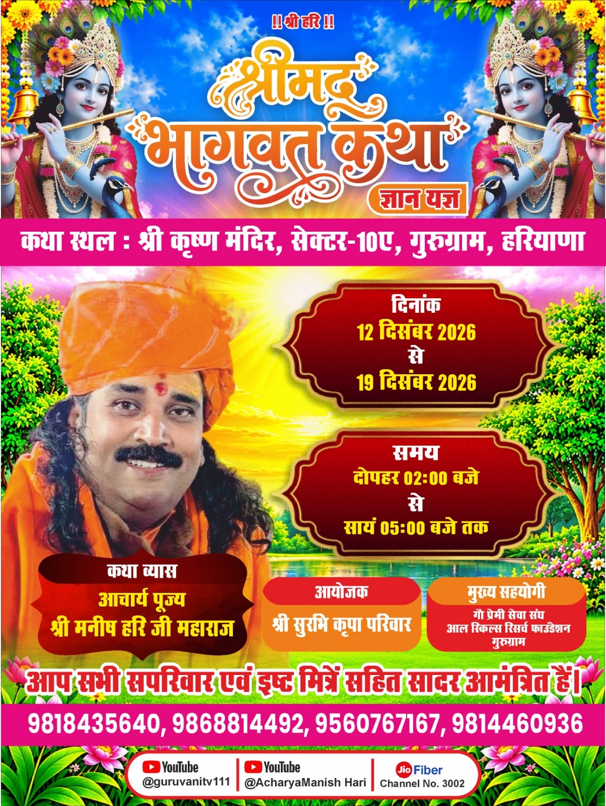
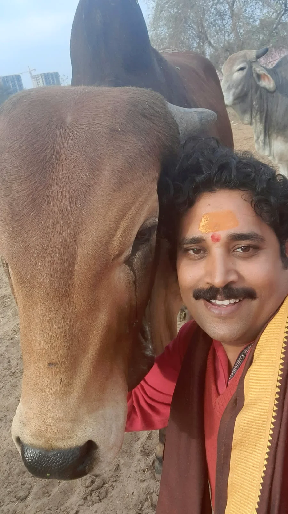
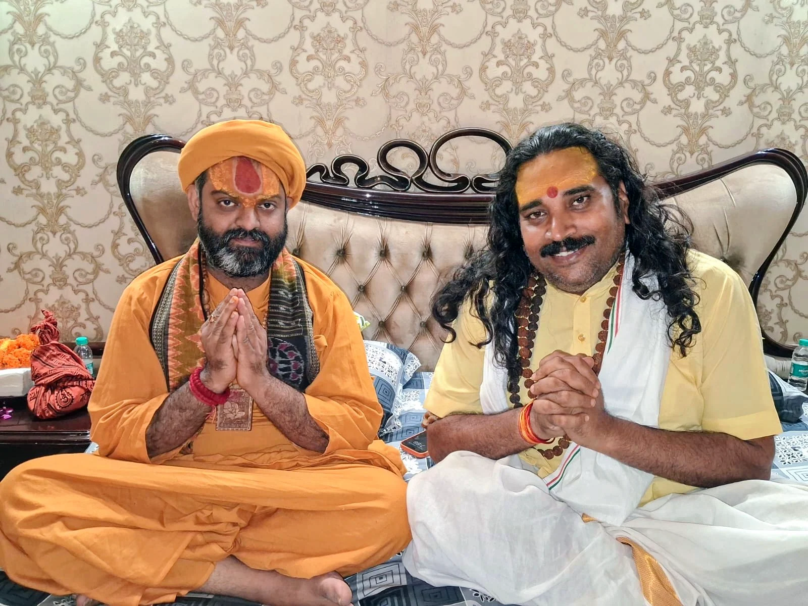

गौ सेवागौ माता की सेवा
गायों और बछड़ों के लिए प्रतिदिन हरा चारा, स्वच्छ जल, आश्रय, देखभाल और प्रेम।
श्री सुरभि कृपा परिवार · गुरुग्राम, हरियाणा
गौ माता की सेवा। सनातन धर्म का संरक्षण। समाज का सशक्तीकरण।
श्रद्धालुओं का एक जीवंत परिवार, जो गौ माता की सेवा प्रेम से करता है, हमारी पवित्र परंपराओं को जीवित रखता है और समाज की सेवा करता है — सेवा के एक-एक कदम के साथ।

 सेवा वही, जो हृदय से हो।
सेवा वही, जो हृदय से हो।
आगामी आयोजन
श्रीमद् भागवत कथा
गोप्रेमी आचार्य मनीष हरि जी के सान्निध्य में आठ दिन की कथा, भक्ति और सत्संग। अपने परिवार और मित्रों के साथ भक्ति, चिंतन और सामूहिक सान्निध्य के इन दिनों में आएँ।
आप सभी सपरिवार एवं इष्ट मित्रों सहित सादर आमंत्रित हैं।
कार्यक्रम हेल्पलाइन 99113 47071

पूरा पोस्टर देखें 12–19 दिसंबर 2026हमारा ध्येय
गौ सेवा ही परम सेवा है।
श्री सुरभि कृपा परिवार श्रद्धालुओं का वह परिवार है जो एक सरल विश्वास से जुड़ा है: जब हम गौ माता की सेवा करते हैं, तब हम ईश्वर, अपनी संस्कृति और अपने साझा भविष्य की सेवा करते हैं। चारे की हर मुट्ठी, देखभाल का हर क्षण और सत्संग का हर आयोजन प्रेम का अर्पण है।
हम यहाँ कोई संस्था बनाने नहीं आए हैं। हम एक परिवार बनाने आए हैं — जहाँ हर कोई जुड़ सके, हर कोई योगदान दे सके और हर कोई आगे बढ़ सके।
हमारी सेवा
हमारा हर कार्य एक ही भाव से निकलता है — सेवा की इच्छा। ये चार हैं उस इच्छा के स्वरूप।



गायों और बछड़ों के लिए प्रतिदिन हरा चारा, स्वच्छ जल, आश्रय, देखभाल और प्रेम।
हवन, सत्संग, कथा, पर्व और संस्कार, जो हमारी पवित्र परंपराओं को जीवित रखते हैं।
सामूहिक भोजन, स्वच्छता अभियान, युवाओं से जुड़ाव और पड़ोसी सहयोग।
आयुर्वेद और कामधेनु आरोग्य संस्थान की भावना से प्रेरित स्वास्थ्य मार्गदर्शन।
सेवा के क्षण
गाय को चारा खिलाते, बछड़े को सहलाते या समाज को एक साथ आते देखने की शांत गरिमा को कोई फ़िल्टर बेहतर नहीं बना सकता। ये हमारी सेवा के सच्चे क्षण हैं।
सेवा के और मार्ग
उसी भक्ति से उपजी तीन शांत प्रतिबद्धताएँ।
स्वच्छ सामग्री और पूरे ध्यान से अर्पित प्रार्थना की दैनिक अग्नि।
फ़ोटो: Sush Motwani · CC BY-SA 4.0
पीपल, नीम और बरगद के पौधे, सिंगल-यूज़ प्लास्टिक में कमी, स्वच्छ आसपास।
दिव्यांगजनों के लिए सम्मान और सहयोग, तथा जरूरतमंदों के लिए वस्त्र और भोजन।
मार्गदर्शक
गोप्रेमी आचार्य मनीष हरि जी एक आध्यात्मिक मार्गदर्शक और गौ सेवक हैं, जिनका जीवन गौ माता की सेवा के इर्द-गिर्द है। प्रतिदिन गौ सेवा, सत्संग, हवन और गुरुग्राम के आसपास सामाजिक पहलों के माध्यम से वे श्रद्धालुओं के बढ़ते परिवार को करुणा, सेवा और सनातन संस्कृति के मूल्यों के साथ जीने की प्रेरणा देते हैं।
उनके मार्गदर्शन में यह परिवार उन श्रद्धालुओं, युवा जिज्ञासुओं और समाज-सेवियों का संगम बन गया है जो केवल संसाधनों से नहीं, अपने समय, ध्यान और हृदय से सेवा करना चाहते हैं।
गाय हमारी संस्कृति,
सनातन हमारे प्राण।
“गाय हमारी संस्कृति हैं; सनातन हमारे प्राण हैं।”
गोप्रेमी आचार्य मनीष हरि जी
प्रेस में
गौ सेवा, सनातन संस्कृति और भारतीय परंपरा पर आचार्य जी के विचार हरियाणा और दिल्ली के हिंदी दैनिकों में प्रकाशित हुए हैं।
गाय हमारी संस्कृति, सनातन हमारे प्राण।
हिंदी दैनिक · हरियाणा
धर्म, अर्थ, काम व मोक्ष का द्वार है गौमाता।
हिंदी दैनिक · दिल्ली
गोसेवा राष्ट्र सेवा का सर्वश्रेष्ठ माध्यम।
हिंदी दैनिक · हरियाणा
शीर्षक प्रकाशित कवरेज से उद्धृत हैं। प्रकाशनों के नाम और तिथियाँ सत्यापन के बाद जोड़ी जाएँगी।
गौ सेवा में सहयोग
हर दिन गौ माता हमसे भोजन, जल, औषधि और प्रेम की अपेक्षा रखती हैं। आपका योगदान — छोटा या बड़ा — उस जीवन के लिए चारा, देखभाल और गरिमा बन जाता है, जो हमें इतना कुछ देता है।
क्षण
दर्शन, सेवा, सत्संग और हमारे दिनों के वे शांत क्षण, जो सब कुछ कह जाते हैं।



आइए, हमारे साथ बैठिए
आपका स्वागत है
आप गौशाला आना चाहें, सत्संग में शामिल होना चाहें, सेवा अर्पित करना चाहें या केवल जानना चाहें — आपका स्वागत है।